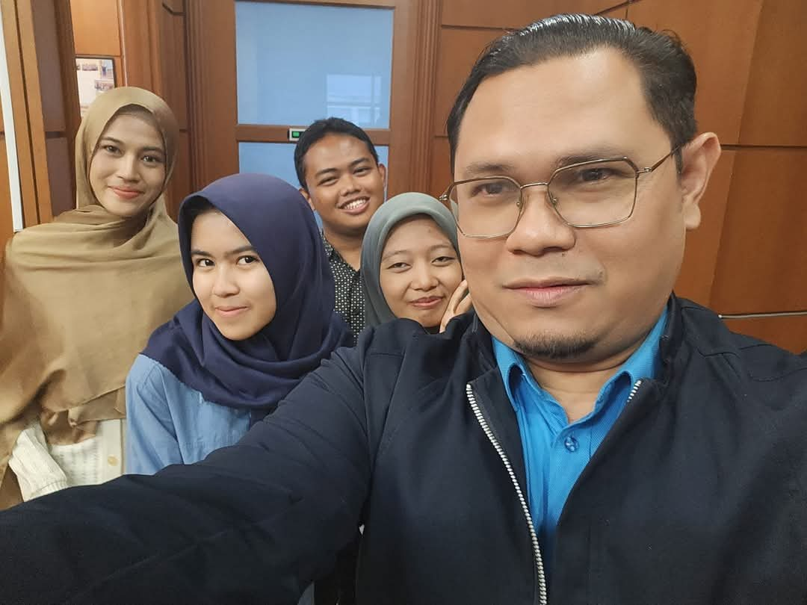
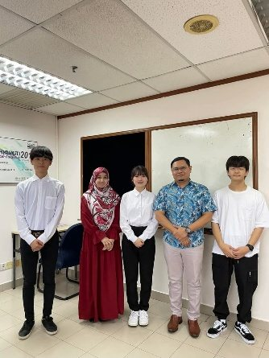
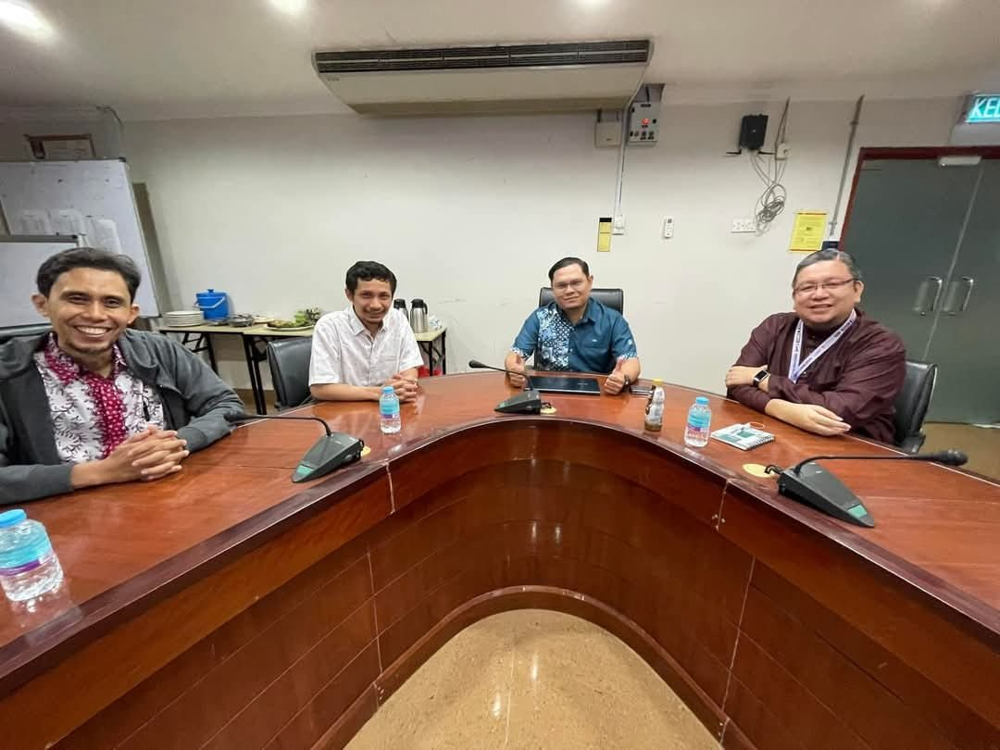
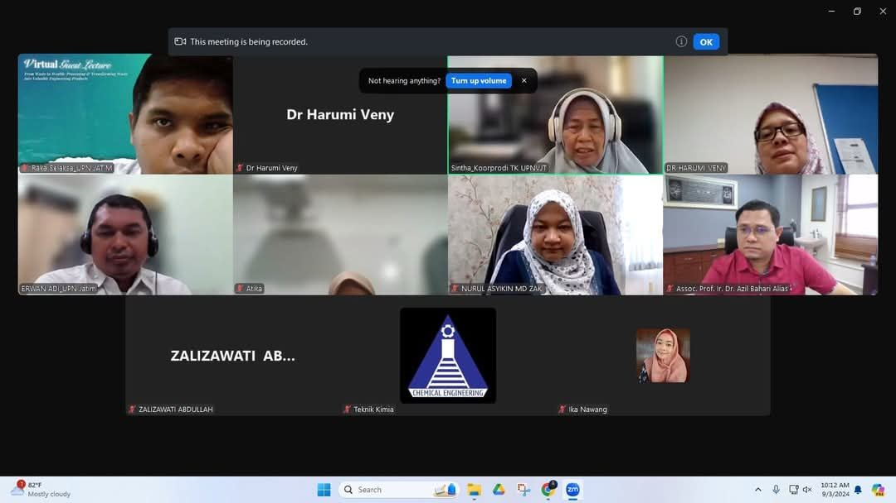

Students
PhD and MSc supervision, graduates, current students and thesis examining.
Figures as of 25 September 2026.
Prospective students
MSc and PhD projects are available in biomass-derived adsorbents, gas-mask filters, energy storage materials, waste-to-energy and process safety. International applicants are welcome.
Enquire about a placeInternational graduates
Doctoral graduates include researchers from Northern Technical University, Iraq, and Jawzjan University, Afghanistan, and he has hosted interns from France and Japan.
Every year
Supervises around five final-year research projects and six design projects each year, on top of his postgraduate students.
The supervision tree
Every postgraduate he has supervised, drawn as a single plate: four PhD and eleven MSc graduates, and eight in progress. Select a leaf to read the thesis.
Fig. Doctoral graduates include researchers from Northern Technical University, Iraq, and Jawzjan University, Afghanistan. One graduate, Deana Qarizada, appears twice: MSc (2018/2019) and PhD (2023/2024).
15 postgraduate graduates
| Level | Graduate & thesis | Role | Graduated |
|---|---|---|---|
| PhD | Ali Mohammed Saleh Production of Carbon Adsorbent from Petroleum Sludge | Main | Sesi 1 2025/2026 |
| PhD | Deana Qarizada Hydrogen Sulphide adsorption by Xerogel from commercialized biochar originated from rice husk | Main | Sesi 2 2023/2024 |
| PhD | Hadi Hamdi Mahdi Capturing of CO2 Gas by Adsorption on Activated Carbon for Facing Climate Change | Main | Sesi 2 2025/2026 |
| PhD | Syarifah Nursyimi Azlina Binti Syed Ismail Desulphurisation of Heterocyclic Sulphur Coal via New Combination of Chemical Pre-Treatments | Co-supervisor | Sesi 1 2025/2026 |
| MSc | Nor Hidayah Binti Meri Kinetic Modeling Of H2S Hydrogel Bioadsorbent | Main | Sesi 1 2019/2020 |
| MSc | Nik Muhammad Faisal Bin Mat Yasin Adsorption of Oil (Pome) using Aerogel from EFB and Pks | Main | Sesi 1 2021/2022 |
| MSc | Nurul Farhana Binti Ahmad Upgrading Hydrogel Biochar from Oil Palm Residue for Waste Sorption | Main | Sesi 2 2018/2019 |
| MSc | Muhamad Ariff Bin Amir Hamzah Anaerobic Digestion Of Food Waste And Empty Fruit Bunches (EFB) for Mathane Production | Main | Sesi 2 2021/2022 |
| MSc | Norfazilah Binti Abdullah Modification of Palm Shell Activated Carbon Adsorbent via Impregnation of Ni Nanoparticles and NH3 Induction for H2S Removal | Co-supervisor | Sesi 1 2024/2025 |
| MSc | Mohd Saufi Bin Md Zaini Natural gas storage with wet adsorbent | Co-supervisor | Sesi 2 2015/2016 |
| MSc | Anis Farhanah Binti Mohd Suhaimi Yeong Prediction of uncertainty quantification in the impact consequences cause by fire explosion phenomenon at industrial accident scenarios | Co-supervisor | Sesi 2 2018/2019 |
| MSc | Deana Qarizada Effect Of Polymer On Solid Deposits In Gas/Oil Fields | Co-supervisor | Sesi 2 2018/2019 |
| MSc | Mozhdah Qaeem Study the best MAH option for the identification of accident scenarios in the framework of land use planning | Co-supervisor | Sesi 2 2018/2019 |
| MSc | Siti Anis Binti Mohd Amran Preparation of Adsorbent from Mixed Biomass | Co-supervisor | Sesi 2 2018/2019 |
| MSc | Ahmad Arif Bin Azmi Extraction of precious metal from electroplating waste using plant extract | Co-supervisor | Sesi 2 2019/2020 |
8 current students
| Level | Student & thesis | Role |
|---|---|---|
| PhD | Nor Mohd Razif Bin Noraini Development of Biomass-Derived Carbon Aerogel Filter for Respiratory Protective Equipment | Main |
| PhD | Asnida Yanti Binti Ani Co-Liquefaction of EFB and HDPE Toward Bio-Oil Product Distributions Under Supercritical Conditions | Co-supervisor |
| PhD | Nur Sya`fiqa Binti Jamaluddin Life Cycle Assessment on Constructed Wetlands As Sewage Treatment Alternative in Malaysia Towards 2050's Net Zero Emission Target | Co-supervisor |
| PhD | Nurul Nazira Binti Ibrahim Thesis title to be confirmed | Co-supervisor |
| MSc | Ashadi Azwan Bin Abd Rahman Development of newly improved hydrogel biochar from biomass residue for SO2 gas cleaning in a novel multilayered sorption bed | Main |
| MSc | Nurul Shazviena Binti Mohd Shukry Hybrid hydrogel and aerogel derived from empty fruit bunch (EFB) as hydrogen sulphide (H2S) adsorbent | Main |
| MSc | Ahmad Yazid Bin Asuat Determine the method which would minimize the uncertainty loopholes in IEC 60079-10-2 | Co-supervisor |
| MSc | Nur Adlina Nadia Binti Ahmad Ridzuan Synergistic Behaviour of Algae, Fungi and Bacteria Utilizing Perfluorinated Alkyl Substances (PFAS) in Water Environment | Co-supervisor |
Examiner and panel service
13 theses examined and 12 proposal-defence and progress panels.
| Programme | Thesis examined |
|---|---|
| AS990 (PhD) | Co-liquefaction of rubber seed and Malaysian low-rank coal for bio-crude production |
| AS990 (PhD) | Liquefaction of Mukah Balingian coal using tetralin-glycerol mixed solvent system |
| AS757 (MSc) | Modification and characterization of microwave-assisted interstitial N-doped TiO2 for photodegradation of RR4 dye |
| EH780 | Chemically produced activated carbon from palm kernel shell for radioactive iodine scrubbing |
| EH750 (MSc) | Rapid Expansion Supercritical Solution (RESS) carbon dioxide as an environmentally friendly method for ginger rhizome solid oil particles formation |
| EH750 (MSc) | The fuel properties of coal bio-oil slurry |
| EH750 (MSc) | Thermal behaviour of co-utilisation of Silantek coal and empty fruit bunch using thermogravimetric analysis |
| EH750 (MSc) | Development of palm oil based coating material from unripe oil palm fresh fruit bunch for industrial application; a comparison with epoxidized used cooking oil based coating materials |
| EH950 (PhD) | Conversion of oily sludge from North Refineries Company (NRC) Baiji into value-added chars: a comparative study of three thermochemical processes |
| EH950 (PhD) | An integrated phyto-adsorption remediation of acid mine drainage in Tasik Puteri, Bukit Besi |
| CEEH950 (PhD) | Synthesis and optimization of nitrogen-doped activated carbon from palm kernel shells for enhanced lithium polysulfide adsorption in lithium-sulfur batteries |
| CEEH750 (MSc) | Synthesis of xerogel-immobilized N/S/O-doped carbon quantum dots derived from chitosan-based shrimp shells for CO2 capture |
| CEEH950 (PhD) | ZnO nanoparticles modified by EFB-derived carbon dots for enhanced photocatalytic tetracycline removal |



